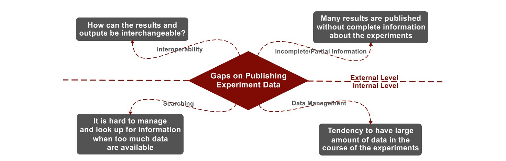

Existing gaps on machine learning publications separated by level and topic

Developing and Analysis Issues (Internal Level)
Sharing and Publishing results Issues (External Level)
State-of-the-art Workflow System are great for experiment's control...
...however we still need a lightweight and cross-platform interchange format for Machine Learning!
Consequently, usual questions that arise during the reading would become clear with provenance information of the MEX format

common questions...
"Which kernel method did they use?", "What is the regularization constant value?",
"How many folds were used to cross-validation section?", "Did he normalize the data?", "What is the data distribution?",
"Does any hypothesis test has been applied?", "What are the hardware's specifications?"